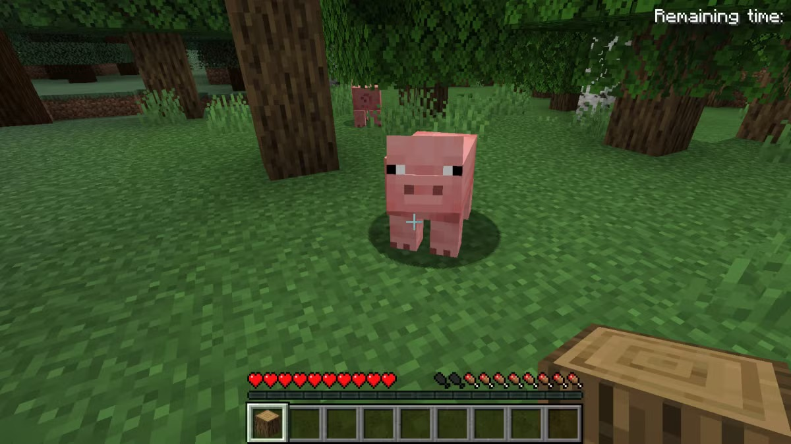
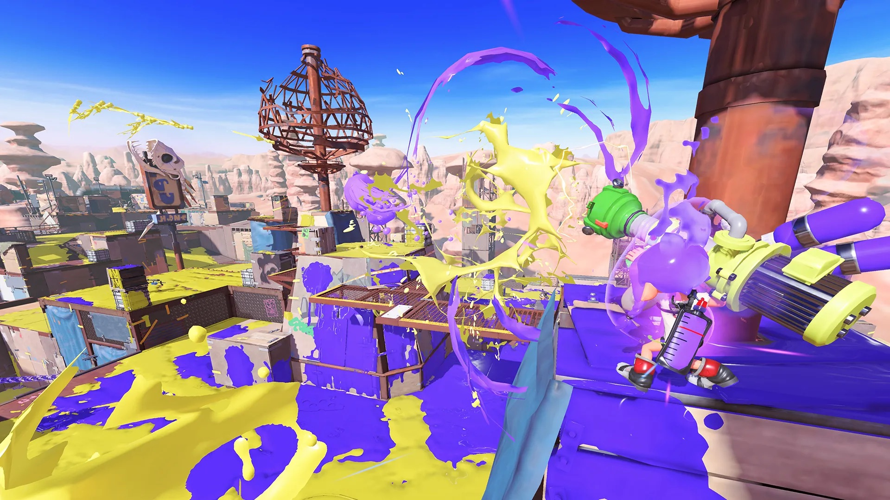
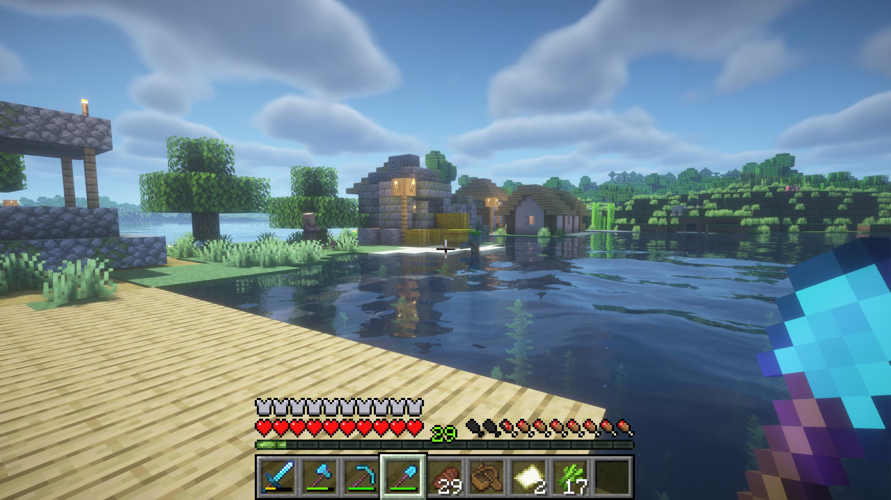
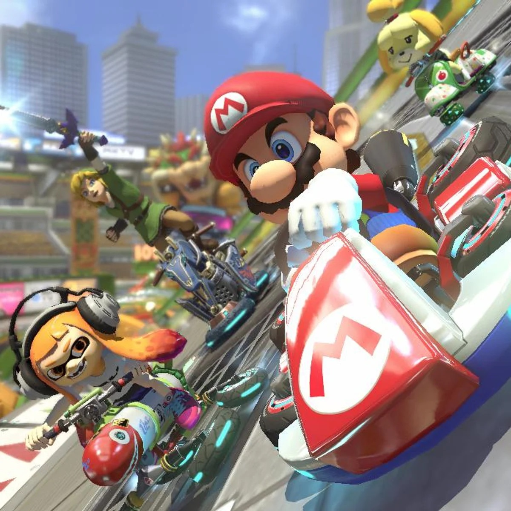
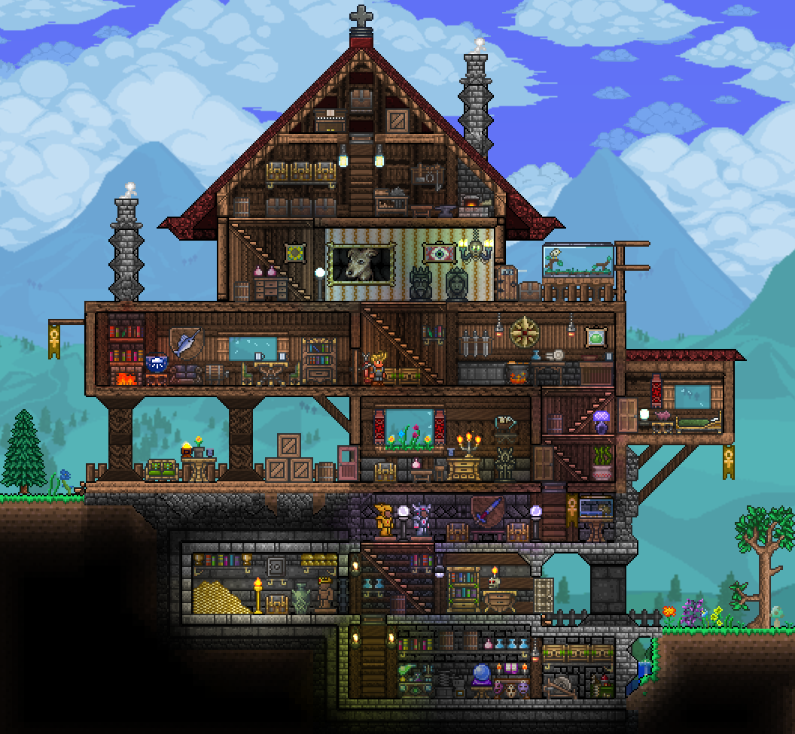
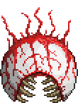
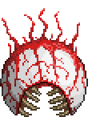

|
what is a "modern!" game ? general thought defines a "retro" game as anything that's at
least 15 years old. So, any game that isn't can be thought as
"modern!"
general thought defines a "retro" game as anything that's at
least 15 years old. So, any game that isn't can be thought as
"modern!"

|
|
|
 |
blah |
|

splatoon 3 |

minecraft |
|---|---|
|

mario kart 8 |

terraria |


|
Whether you’re racing your family on the big screen in your
living room, playing in the park, or visiting a friend’s place,
Nintendo Switch lets you play Mario Kart any way you like!
|
|
|---|
 

The very world is at your fingertips as you fight for survival,
fortune, and glory. Delve deep into cavernous expanses, seek out
ever-greater foes to test your mettle in combat, or construct your
own city - In the World of Terraria, the choice is yours! Blending
elements of classic action games with the freedom of sandbox-style
creativity, Terraria is a unique gaming experience where both the
journey and the destination are as unique as the players themselves!
| First Released on | PC / MAC |
| Genre | Action Adventure / Sandbox |
| Modes | Singleplayer / Multiplayer |
| Difficulty | |


Splatoon 3 expands the Splatoon series on many different fronts, with an extensive story mode, new Salmon Run challenges and rewards, a wider range of customization with more options (including the additions of Splashtags and the locker room), and the new mode Tableturf Battle. Additionally, Splatoon 3 streamlines many aspects of the previous games. The lobby is reworked into a greatly expanded practice area accessible between matches, Splatfests are overhauled with three teams rather than two and a new Tricolor Turf War mode, and the UI has been made more responsive and informative.